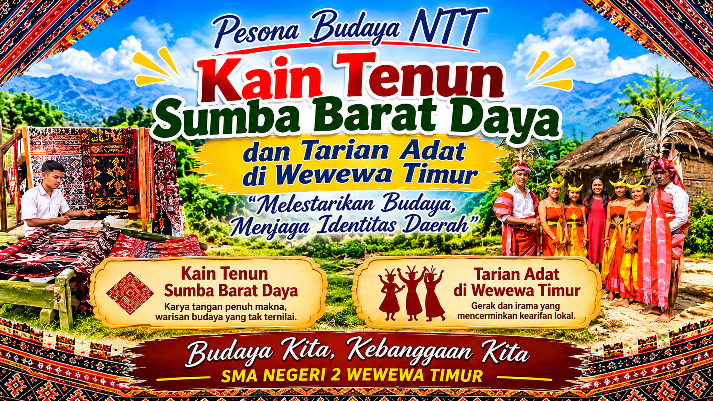

sejarah sekolah
SMA Negeri 2 Wewewa Timur berlokasi di Desa Mata Pyawu, Kecamatan Wewewa Timur, Kabupaten Sumba Barat Daya, Provinsi Nusa Tenggara Timur. Sekolah ini didirikan pada tahun 2019 dan berada di bawah pembinaan Dinas Pendidikan dan Kebudayaan Provinsi NTT. Pendiriannya dilatarbelakangi oleh kebutuhan masyarakat setempat akan satuan pendidikan menengah atas yang lebih dekat dan mudah dijangkau. Sekolah ini hadir sebagai wujud komitmen dalam memperluas akses pendidikan dan meningkatkan kualitas sumber daya manusia di wilayah Desa Mata Pyawu. Dalam proses pembentukannya, SMA Negeri 2 Wewewa Timur mendapat dukungan penuh dari masyarakat Desa Mata Pyawu melalui hibah lahan sekolah sebagai bentuk kepedulian terhadap kemajuan pendidikan.
Kegiatan belajar mengajar dimulai pada tahun 2019 yang bertempat di SMP Negeri 6 Wewewa Timur. Pada tahun 2021, sekolah mulai menempati gedung sendiri di Desa Mata Pyawu.Saat ini sekolah dipimpin oleh Martha Loru Kandi, S.Pd sebagai kepala sekolah, dan terus berkembang dengan penambahan sarana dan prasarana melalui program revitalisasi sekolah. Kini SMA Negeri 2 Wewewa Timur memiliki 262 siswa, 24 guru, dan 3 tenaga kependidikan. Dengan visi “Terwujudnya lulusan yang berkarakter Pancasila, unggul dalam prestasi, dan adaptif terhadap teknologi dalam lingkungan yang asri”, sekolah ini terus berupaya menjadi tempat belajar yang mencerdaskan generasi muda Wewewa Timur dan Sumba Barat Daya.
arti logo sekolah
Logo SMA Negeri 2 Wewewa Timur berbentuk perisai, yang melambangkan perlindungan, kekuatan, dan kehormatan sekolah dalam menjaga karakter siswanya. Warna hijau pada logo melambangkan kesuburan, pertumbuhan, dan lingkungan yang asri, sejalan dengan visi sekolah. Warna kuning atau emas melambangkan keluhuran, kejayaan, dan cita-cita yang tinggi, sedangkan warna putih melambangkan kesucian, ketulusan, dan kejujuran. Garis putih di dalam perisai menggambarkan batas yang menjaga sekaligus kemurnian niat dalam belajar.
Di bagian atas logo terdapat bintang yang melambangkan ketuhanan dan cita-cita yang tinggi, dan juga dapat dimaknai sebagai nilai Pancasila, yaitu Ketuhanan Yang Maha Esa. Di bagian tengah, mata pena berwarna emas melambangkan ilmu, kecerdasan, dan kemampuan menuangkan gagasan, sedangkan buku terbuka melambangkan sumber ilmu, pembelajaran, dan semangat membaca. Lingkaran di belakang keduanya melambangkan kesatuan dan pusat kegiatan sekolah, yaitu belajar. Di sisi kiri terdapat ranting daun yang melambangkan pertumbuhan, kehidupan, dan harapan. Di sisi kanan terdapat bunga yang menyerupai kapas, yang dalam simbol umum bangsa Indonesia melambangkan kesejahteraan dan kecukupan. Keduanya menggambarkan kemakmuran yang tumbuh dari pendidikan.
Tulisan “SMA Negeri 2 Wewewa Timur” menunjukkan identitas sekolah, “Sumba Barat Daya” menunjukkan asal daerah dan kebanggaan lokal, dan “2019” menunjukkan tahun berdirinya sekolah.

VISI
Terwujudnya lulusan yang berkarakter pancasila, unggul dalam prestasi, dan adaptif terhadap teknologi dalam lingkungan yang asri.
MISI
- Menyelenggarakan pembelajaran yang berpusat pada siswa untuk menumbuhkan nalar kritis dan kreativitas
- Menanamkan nilai-nilai karakter berbudi perkerti, berjiwa Pancasila dalam setiap aktivitas sekolah.
- Meningkatkan kompetensi pendidik dan tenaga kependidikan dalam penguasaan teknologi informasi dan komunikasi (TIK).
- Mengoptimalkan sarana prasarana sekolah melalui progam Revitalisasi guna menciptakan lingkungan belajar yang kondusif.
- Membangun kemitraan yang harmonis dengan orang tua, komite, dan masyarakat dalam mendukung pendanaan dan program sekolah.
TUJUAN
SMA Negeri 2 Wewewa Timur bertujuan mewujudkan peserta didik yang unggul dalam penguasaan Bahasa Inggris, berkarakter Profil Pelajar Pancasila, serta berbudaya dengan menjunjung tinggi nilai-nilai dan kearifan lokal Wewewa.
Melalui pembelajaran yang berkualitas, pemanfaatan teknologi informasi, penguatan literasi, pengembangan kepemimpinan, dan berbagai kegiatan akademik maupun nonakademik, sekolah berkomitmen membentuk lulusan yang berprestasi, berintegritas, mampu berkomunikasi secara global, serta memiliki kepedulian terhadap lingkungan dan masyarakat. Dengan semangat "From Wewewa to the World".
SMA Negeri 2 Wewewa Timur mempersiapkan generasi yang siap melanjutkan pendidikan, bersaing di tingkat nasional maupun internasional, tanpa meninggalkan jati diri sebagai insan yang berbudaya.

Profil Kepala Sekolah
Ibu Martha Loru Kandi, S.Pd.
Ibu Martha Loru Kandi, S.Pd. merupakan Kepala Sekolah definitif pertama SMA Negeri 2 Wewewa Timur yang memiliki peran penting dalam membangun fondasi pengelolaan dan pengembangan sekolah sejak awal berdirinya.
Dengan semangat kebersamaan, kolaborasi, dan komitmen terhadap pendidikan, SMA Negeri 2 Wewewa Timur terus diarahkan untuk memberikan pendidikan yang berkualitas serta membentuk peserta didik yang berkarakter, berprestasi, dan berbudaya.
Program Unggulan Sekolah
Berbagai program unggulan SMA Negeri 2 Wewewa Timur dalam mengembangkan potensi, karakter, kreativitas, dan wawasan peserta didik.

Budaya Literasi dan Karya Tulis
Budaya literasi dan karya tulis merupakan salah satu program unggulan SMA Negeri 2 Wewewa Timur yang bertujuan menumbuhkan kebiasaan membaca dan menulis sebagai bagian dari keseharian peserta didik.
Selengkapnya
Pelestarian Budaya Lokal
Pelestarian budaya lokal merupakan salah satu program unggulan SMA Negeri 2 Wewewa Timur yang berlokasi di Desa Mata Pyawu, Kecamatan Wewewa Timur, Kabupaten Sumba Barat Daya.
Selengkapnya
Pemanfaatan Lahan Sekolah
Pemanfaatan lahan kosong merupakan salah satu program unggulan SMA Negeri 2 Wewewa Timur yang bertujuan mengubah lahan sekolah yang belum terpakai menjadi area hijau yang produktif dan bermanfaat.
Selengkapnya